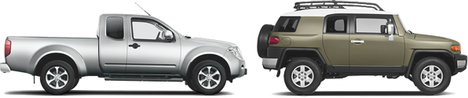

«Хозяйственный мужчина ищет надежную красавицу для прогулок по бездорожью. Полный привод обязателен»
Простой способ выбрать автомобиль
Каталог
Поиск
Выборки автомобилей
Простой язык
Самый большой каталог
с описанием автомобилей
от современных — до 20 лет назад
Возможность искать
по большему числу параметров, чем где бы то ни было
Выборки автомобилей
в зависимости от ваших потребностей:
«семейный», «для города», «для путешествий»
Возможность описания характеристик простым языком, понятным неискушенному пользователю